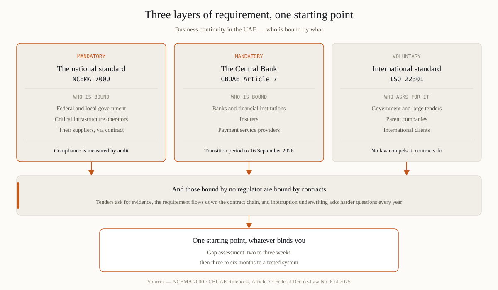

What business continuity management is — and is not
Business continuity management (BCM) is the discipline of making sure your organisation can keep delivering its critical products and services through a disruption — a cyber attack, an IT failure, a fire, a lost supplier, a closed facility — and recover to normal operations quickly. The output is not a document. It is a capability: people who know what to decide in the first hours, arrangements that keep priority work running, and evidence that all of it has been tested.
What BCM is not: a 200-page plan nobody has read, an IT-only disaster recovery project, or an insurance policy. Insurance replaces money after the fact; continuity keeps the business alive during the event. The two work together and do not substitute for each other.
Why UAE companies build BCM now
- Regulation. NCEMA 7000 is mandatory for government entities and critical infrastructure; CBUAE Rulebook Article 7 binds banks and financial institutions; the new Central Bank law brings insurers and payment providers into one supervised framework with a September 2026 transition deadline.
- Clients and tenders. Government and enterprise clients increasingly require continuity evidence from suppliers — the requirement flows down the contract chain.
- Insurers. Business-interruption underwriting asks harder questions every year; a tested BCM system directly affects both insurability and claims.
- The threat picture. Ransomware and regional airspace incidents have turned «low probability» scenarios into recurring operating conditions. Boards have noticed.

The five components of a working system
| Component | What it produces | The test of quality |
|---|---|---|
| Business impact analysis (BIA) | Critical activities, cost of downtime per day, recovery objectives | Numbers a CFO signs, not adjectives |
| Risk assessment | Scenarios that can stop you; single points of failure | The list gets shorter quarter by quarter |
| Continuity strategies & plans | Alternate facilities, workarounds, technology recovery, first-hours authority | Short enough to use at 2 a.m. |
| Exercises | Findings, timings, closed actions | At least one realistic test per year that finds something |
| Metrics & governance | Resilience index, board reporting, review cycle | Leadership can answer «can we recover?» with a number |
What it costs and how long it takes
For a mid-size organisation, a credible path runs: gap assessment 2-3 weeks, then 3-6 months from assessment to a tested, audit-ready system — driven mostly by how engaged leadership is and how complex the operation. The single most useful early artefact is the cost of one lost day per critical facility or process: it prices every later decision, from alternate-site spend to insurance limits.
A rule that saves budgets: never buy continuity measures before the BIA. Without the cost of downtime, every proposal is either too expensive or too cheap — and you cannot tell which.
How to start, in order
- 1 · Take a readiness check. Thirteen questions, five minutes, result on screen — our free quiz covers the two scenarios that matter most in the region: a drone incident and ransomware.
- 2 · Run a gap assessment. Against ISO 22301 and NCEMA 7000 / CBUAE requirements as applicable: what exists, what is paper, what is missing — priced in downtime.
- 3 · Fix by priority, not by chapter. The 90-day plan orders work by money at risk. First-hours authority and workarounds usually come first; templates come last.
- 4 · Test and measure. A tabletop exercise, then metrics on a dashboard the board actually sees.
Frequently asked questions
Is business continuity legally required in the UAE?
For government entities and critical infrastructure — yes, under NCEMA 7000. For banks, insurers and payment providers — through CBUAE regulation. For other private companies it is not a blanket legal duty, but contracts, tenders and insurers increasingly make it a commercial one.
What is the difference between BCM, BCP and DRP?
BCM is the management discipline; a BCP (business continuity plan) is the documented plan for keeping priority activities running; a DRP (disaster recovery plan) is the technology recovery subset. A BCP without BCM behind it is a document; BCM without a tested BCP is an intention.
Can a small company afford this?
The discipline scales down honestly: one focused BIA, one short plan for the top three scenarios, one annual test. The standards themselves are explicitly proportionate. What does not scale down is skipping the test.
How does business continuity relate to insurance?
Insurance transfers financial impact; continuity reduces operational impact and shortens the interruption. Insurers reward the combination — and business-interruption claims are settled faster when tested plans and evidence exist.